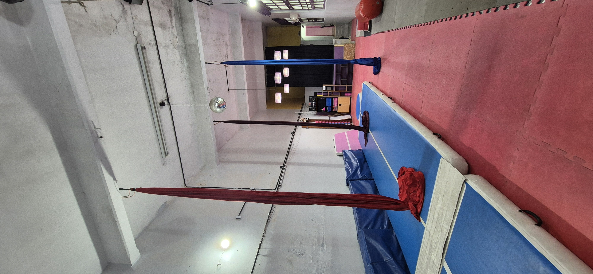

Brutalismo Coreográfico
Labanotación contemporánea. Líneas vectoriales de torsión, blanco hueso y verde petróleo como tinta arquitectónica. Cero pose, pura precisión anatómica.

TÉCNICA DE SUELO
Inercia circular y transferencia de peso. Para adultos con o sin experiencia.
B-Boying de Galería
Cultura de piso y breaking elevada a libro de arte. Fotografía de obturación rápida, Abolition en gran escala y parches densos de #009084 sobre asfalto.
DE PISO.
Nacido del breaking y la capoeira. La acrobacia entendida como fuerza y contacto real.
Física de Resortes
La tipografía tiene masa real (motor baredom). Al caer se comprime contra el piso; al despegar se estira. Clickeá el título para probar la física.

El texto responde al salto y a la caída del alumno con leyes físicas de resorte.
Atmósfera Mineral & Ciruela
El "sueño de volar" pictórico. El verde petróleo #009084 fundido con violeta ciruela profundo (#1e0a2b). Luz de ventanal de galpón y suspensión en telas.

DESCONECTAR EL PESO.
"El concepto que nos hace venir, la fantasía de flotar por fuera del mundo."